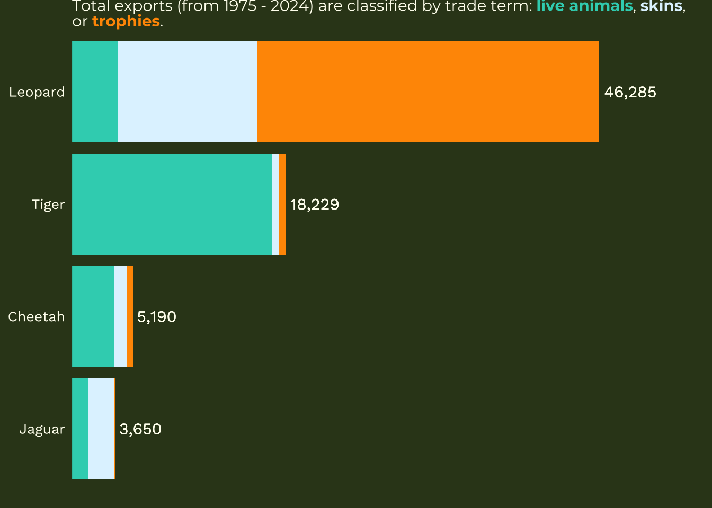

# load libraries
library(tidyverse)
library(dplyr)
library(here)
library(janitor)
library(scales)
library(networkD3)
library(patchwork)
library(ggtext)
library(ARTofR)
# # custom icons and fonts fonts
# font_add(family = "Font Awesome 6 Brands",
# regular = here(rootdir,"otfs/Font-Awesome-6-Brands-Regular-400.otf"))
#
# font_add_google(name = "Sen",
# family = "sen")
#
# font_add_google(name = "Playfair Display",
# family = "play")
#
# #showtext_auto() # for importing fonts
#
# # github icon
# github_icon <- ""
# github_username <- "madicalbert"
# gh_caption <- glue::glue(
# "<span style='font-family:\"Font Awesome 6 Brands\";'>{github_icon};</span>
# <span style='color: white'>{github_username}</span>"
# )
# custom color palette
pal <- c(light_text = "#D2B48C",
dark_text = "#6B4226",
med_text = "#A6761D")International Wildlife Trade of Big Cats
Introduction
This blog post provides a step-by-step guide to creating an infographic while incorporating ten key design elements: graphic forms, text, themes, color schemes, typography, overall design, data contextualization, primary messaging, accessibility, and diversity, equity, and inclusion (DEI). Using publicly available data from the Convention on International Trade in Endangered Species of Wild Fauna and Flora (CITES), I explored the most frequently traded threatened and endangered big cats within the Felidae family. While individual figures and plots are valuable on their own, weaving together multiple visualizations and text into a cohesive infographic can be a compelling way to tell a story. This approach enables readers to follow a structured, often artistic thought process rather than interpreting a single standalone figure. However, it’s essential to be mindful of potential drawbacks, such as overwhelming the audience with overly complex visuals. In this post, I will guide you through the process of crafting a clear, engaging, and visually appealing narrative about the international trade of big cats using a Sankey diagram, line plot, and bar chart.
About the Data
The data set I used is publicly available on the CITES Database, which tracks international trade in wildlife and wildlife products regulated under the Convention on International Trade in Endangered Species of Wild Fauna and Flora (CITES). CITES collects data from member countries, which are required to report trade transactions involving species listed under the convention. These reports include information on the type of trade (e.g., imports, exports, re-exports), the species involved, the quantity and purpose of trade, and the source of the specimens (e.g., wild-caught or captive-bred). This standardized data helps monitor global wildlife trade and assess its impact on species conservation.
The dataset contains various variables related to trade records including: the year range (from 1975 onwards), the exporter and importer, the source of species/items traded (e.g. wild sourced or ranched), the purpose of the transaction (e.g. commercial or scientific), the trade term (e.g. live individuals, skins, etc.), and the taxon (i.e. genus, species, or subspecies) of interest. For this analysis, I primarily focused on the taxon, year, exporter/importer, and the trade term as they provided the most relevant insights into the trade of threatened and endangered big cats. This blog post contains a number of different subsets of the CITES database, the specific data set that I use is called cites_gross_exports.csv, which is a filtered data set for the top 5 most commonly trafficked threatened and endangered big cats from 2000 to present.
Questions
For this project I am interested in how the international trade of the top threatened and endangered big cats (Felidae family) has evolved over the years. To answer this question I pursued the following three questions:
What are the most commonly traded Appendix I big cats?
How has the international trade of the most common Appendix I cats changed from the establishment of CITES in 1975 until present time?
Who are the top exporting and importing countries of the most commonly traded Appendix I cats?
Set Up
Here I loaded some packages, imported some fonts and icons, and picked some colors for the theme of the infographic:
Data Wrangling
Before I can create my infographic I need to wrangle and clean the data so that it can be used for data visualization in my 3 plots:
xxx_title2("Data Wrangling")
##~~~~~~~~~~~~~~~~~~~~~~~~~~~~~~~~~~~~~~~~~~~~~~~~~~~~~~~~~~~~~~~~~~~~~~~~~~~~~~
## Data Wrangling ----
##~~~~~~~~~~~~~~~~~~~~~~~~~~~~~~~~~~~~~~~~~~~~~~~~~~~~~~~~~~~~~~~~~~~~~~~~~~~~~~# Two Master Data Frames
# Comparative imports / exports data
cites <- read.csv(here("data/cites_felidae_1975_2024.csv")) %>%
clean_names()
# Gross exports data
gross_exports <- read.csv(here("data/gross_exports_1975_2025.csv")) %>%
clean_names()
# Clean up gross exports data
gross_exports_clean <- gross_exports %>%
rename_with(~ str_remove(.x, "^x")) %>%
pivot_longer(
cols = -c("app", "taxon", "term", "unit", "country"),
names_to = "year",
values_to = "count"
) %>%
mutate(year = as.integer(year)) %>%
drop_na() %>%
filter(unit == "Number of specimens" | unit == "") %>%
filter(app == "I") %>%
filter(term %in% c("trophies", "live", "specimens"))
gross_exports_long <- gross_exports_clean %>%
mutate(count = as.integer(count)) %>%
uncount(count)
# Create a df of common names of taxon
common_names <- data.frame(
taxon = c(
"Panthera tigris",
"Acinonyx jubatus",
"Panthera pardus",
"Panthera onca",
"Lynx pardinus"),
common_name = c(
"Tiger",
"Cheetah",
"Leopard",
"Jaguar",
"Iberian lynx"))
# ---------------- Top Exports Data --------------------
# Count occurrences of each taxon and get the top 5
top_5 <- gross_exports_long %>%
count(taxon, sort = TRUE) %>%
slice_max(n, n = 5)
top_5 <- top_5 %>%
left_join(common_names, by = "taxon")
# Make a data frame that is the top 5 species and the top 5 terms
top_5_taxa_terms <- gross_exports_long %>%
filter(taxon %in% top_5$taxon) %>%
count(taxon, term, sort = TRUE) %>%
left_join(common_names, by = "taxon") %>%
group_by(common_name) %>%
mutate(total_count = sum(n)) %>%
ungroup()
# --------- Top Exports Across Time Data --------------
# Aggregate data by year and taxon
gross_exports_aggregated <- gross_exports_clean %>%
filter(taxon %in% c("Panthera tigris",
"Acinonyx jubatus",
"Panthera pardus",
"Panthera onca",
"Lynx pardinus")) %>%
group_by(year, taxon) %>%
summarise(total_count = sum(count), .groups = 'drop') %>%
left_join(common_names, by = "taxon")%>%
mutate(taxon = fct_reorder(taxon, total_count, .desc = TRUE))
# Total counts by year
counts_by_year <- gross_exports_aggregated %>%
group_by(year) %>%
summarise(total_count = sum(total_count))
# ------------- Exporter/Importer Data -----------------
# Create df of exporting countries, taxon, and term
export_country <- cites %>%
filter(unit == "Number of specimens" | unit == "") %>%
filter(taxon %in% c("Panthera tigris",
"Acinonyx jubatus",
"Panthera pardus",
"Panthera onca",
"Lynx pardinus")) %>%
filter(term %in% c("skins", "trophies", "live", "specimens", "teeth")) %>%
select(year, taxon,
importer, exporter,
importer_reported_quantity,
exporter_reported_quantity, term)Bar Chart of Top Exports
The first figure that I want to create it a bar plot that highlights the top 5 most commonly traded threatened and endangered big cat species. I also want to highlight the term that is being reported (i.e. live animal, trophy, or specimens which are different parts of an animal). This will answer my first question: What are the most commonly traded Appendix I big cats?
my_pal <- scale_fill_manual(values = c(
"specimens" = "#D2B48C",
"live" = "#A6761D",
"trophies" = "#6B4226"))
top_5_taxa_terms %>%
ggplot(aes(x = fct_reorder(common_name, total_count),
y = n,
fill = fct_reorder(term, n))) +
geom_col() +
coord_flip() +
labs(title = "International Trade of Threatened & Endangered Big Cats",
x = NULL,
y = "Exports",
fill = NULL) +
theme_minimal()+
scale_y_continuous(expand = expansion(mult = c(0,0)),
labels = scales::comma) +
theme(legend.position = "bottom") +
my_pal +
guides(fill = guide_legend(reverse = TRUE)) 
Line Plot of Exports Across Time
My next plot will be a line plot that answers my second question: How has the international trade of the most common Appendix I cats changed from the establishment of CITES in 1975 until present time?
# Make line plot
ggplot(counts_by_year,
aes(x = year,
y = total_count)) +
geom_line() +
geom_vline(xintercept = 1997, linetype = "dashed", color = "#6B4226") +
annotate(
geom = "text",
x = 1997, y = 6000,
label = "CITES CoP10 calls for\nstronger tiger trade restrictions",
size = 3, hjust = 1.1, color = "#6B4226") +
geom_vline(xintercept = 2013, linetype = "dashed", color = "#A6761D") +
annotate(
geom = "text",
x = 2013, y = 5500,
label = "CITES CoP16 adds stronger\ncontrols on big cat trade\n& captive breeding",
size = 3, hjust = 1.1, color = "#A6761D") +
labs(
title = "Exports of Big Cats Over Time",
x = NULL,
y = "Exports") +
theme_minimal() +
scale_y_continuous(labels = scales::comma) +
scale_x_continuous(breaks = seq(1975, 2025, by = 5))
Sankey Plot of Exporters/Importers
My final plot will be a sankey diagram that highlights the flows of exports/imports across countries and answers my final question: Who are the top exporting and importing countries of the most commonly traded Appendix I cats?
# Summarize the trade quantity between each exporter-importer pair
links <- export_country %>%
filter(year %in% 2020:2024) %>%
group_by(exporter, importer) %>%
summarize(value = sum(importer_reported_quantity, na.rm = TRUE)) %>%
ungroup() %>%
filter(value > 50) %>%
drop_na()
# Create a unique list of nodes (exporters and importers)
nodes <- data.frame(name = unique(c(links$exporter, links$importer)))
# Convert country names to indices for networkD3
links <- links %>%
mutate(
IDsource = match(exporter, nodes$name) - 1,
IDtarget = match(importer, nodes$name) - 1
)
# Create the color scale for nodes
# You can modify this color scale to suit your needs (exporter = blue, importer = red)
my_color <- 'd3.scaleOrdinal() .domain(["exporter", "importer"]) .range(["#6B4226", "#A6761D"])'
# Add a node type column to differentiate exporters and importers
nodes$type <- ifelse(nodes$name %in% links$exporter, "exporter", "importer")
# Apply color scale using the 'type' column
# Note that this uses the 'type' column to assign color
p <- sankeyNetwork(Links = links, Nodes = nodes,
Source = "IDsource", Target = "IDtarget",
Value = "value", NodeID = "name",
sinksRight = FALSE,
colourScale = my_color)
# Display the Sankey diagram
pText Annotation
Base Infographic
Now to create a base template in ggplot2 that will serve as the foundation of my infographic with the title, subtitle, and caption. First, I create an empty ggplot() object and add labels and my github information in the caption. I also set the color background here and adjust the margins:
# Base template ggplot for infographic
g_base <- ggplot() +
# geom_segment(aes(x = .5, y = .5, xend = .5, yend = 0.6), color = "black") +
labs(
title = "The World's Largest Fishing Fleet",
subtitle = "China's <span
style='color:#f4c430;font-size:78pt;'>**Illegal**</span> and <span style='color:#b22222;font-size:78pt;'>**Legal**</span> Fishing Vessels Using AIS (2012-2020)"
# caption = gh_caption
) +
theme_void() +
theme(
legend.position = "none",
text = element_text(family = "play", size = 60,
lineheight = 0.3, colour = "white"),
plot.background = element_rect(fill = pal["bg"], colour = pal["bg"]),
plot.title = element_text(size = 128,face = "bold",
hjust = 0.5, margin = margin(b = 10)),
plot.subtitle = element_markdown(family = "sen", hjust = 0.5,
margin = margin(b = 20)),
plot.caption = element_markdown(family = "sen", hjust = 0.5,
margin = margin(b = 10)),
plot.margin = margin(b = 20, t = 50, r = 50, l = 50),
axis.text.x = element_blank()
) Creative Elements
Stitching Together
Lastly, I am using the patchwork package to add layers of inset elements/plots (using inset_element() so that our figures and creative elements are nicely stacked. Note: I had to adjust the fill to be NA for the plots in order to get them to not block one another when stacking my inset elements.
We are then left with the final result:
Design Elements
Graphic form: (you are not limited to just those fundamental chart types discussed in weeks 2 & 4 – explore other chart types and don’t be afraid to get creative with it; check out some of these awesome data viz creators to find inspiration)
Text: (e.g. titles, captions, annotations, axis labels, axis text)
Themes: (i.e. all non-data plot elements; these should be intentionally modified and visually-pleasing)
Colors:
Typography:
General design: (e.g. group order, spacing, text orientation, data-ink ratio, creating a visual hierarchy, avoiding information overload)
Data Contextualization:
Centering Primary Message:
Accessibility: (e.g. colorblind-friendly palettes / contrast, alt text)
Diversity Equity and Inclusion (DEI): lens to your design, as appropriate (e.g. considering the people / communities / places represented in your data, consider how you frame your questions / issue)
Works Cited
Citation: CITES Secretariat and UNEP-WCMC (2022). A guide to using the CITES Trade Database. Version 9. Geneva, Switzerland, and Cambridge, UK.